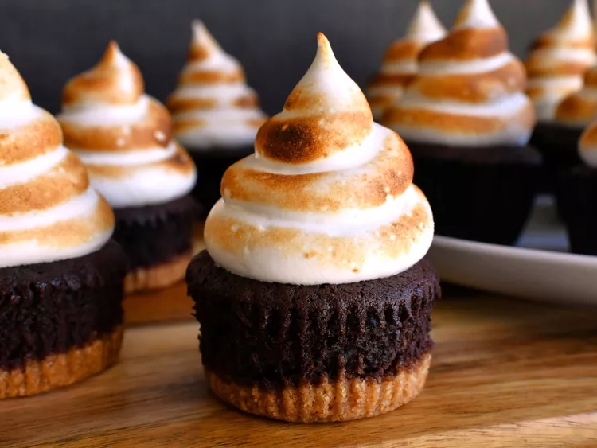

S'mores cupcake recipe

S'mores cupcakes are a delicious twist on the classic campfire treat. These treats feature a graham cracker crust, a chocolate cupcake base, gooey marshmallow filling or topping, and often a chocolate drizzle. The combination of flavors and textures evokes memories of toasting marshmallows by a campfire. Perfect for parties or as a nostalgic indulgence.
Ingredients
Graham Cracker Crust
- 1 1/2 cups graham cracker crumbs
- 6 tablespoons unsalted butter, melted
- 6 tablespoons firmly packed brown sugar
- 1 pinch salt
- 1 pinch ground nutmeg
- 1 pinch ground cinnamon
Chocolate Cupcakes
- 1/2 cup boiling water
- 1/2 cup unsweetened cocoa powder
- 1/2 teaspoon instant espresso powder
- 4 tablespoons unsalted butter, softened
- 2 tablespoons vegetable oil
- 1 cup firmly packed brown sugar
- 1 large egg, at room temperature
- 2 teaspoons vanilla extract
- 1/2 teaspoon salt
- 1 cup cake flour
- 1/2 teaspoon baking powder
- 1/2 teaspoon baking soda
- 2/3 cup sour cream, at room temperature
Marshmallow Frosting
- 18 large marshmallows
- 4 large egg whites, at room temperature
- 2/3 cup white sugar
- 6 tablespoons cold water
- 1/2 teaspoon cream of tartar
- 1 pinch salt
- 1 1/2 teaspoons vanilla extract
- teaspoon almond extract
steps
- Preheat the oven to 350 degrees F (175 degrees C). Line 2 cupcake pans with liners.
- Prepare the crust: Mix graham cracker crumbs, melted butter, brown sugar, salt, nutmeg, and cinnamon together in a small bowl until combined. Place 1 packed tablespoon of crumb mixture into the bottom of about 18 cupcake liners and press into an even layer.
- Bake in the preheated oven until graham cracker crusts are slightly darker in color, 8 to 10 minutes. Allow crusts to cool.
- Prepare cupcakes: Whisk boiling water, cocoa powder, and espresso powder together In a small bowl or measuring cup until smooth and combined. Set aside to cool slightly.
- Beat butter, vegetable oil, and brown sugar in a large bowl with an electric mixer until light and fluffy, about 3 minutes. Add in egg, vanilla, and salt. Beat for an additional 3 minutes on medium-high speed. Add in cocoa powder mixture and beat until thoroughly incorporated. Add in cake flour, baking powder, and baking soda, and mix until just combined. Add in sour cream; mix until just combined.
- Spoon about 2 heaped tablespoons of cake batter over each graham cracker crust, making sure to fill each liner no more than 2/3 full. (There may be extra batter to make 1 or 2 extra cupcakes without a graham cracker crust. Simply put that batter into an empty liner, filling no more than 2/3 full, and bake as a plain chocolate cupcake).
- Bake in the preheated oven, 1 pan at a time, until tops of the cupcakes spring back when lightly touched, 20 to 25 minutes. Allow cupcakes to cool in the pan for 5 minutes before carefully removing to a wire rack to cool completely.
- To prepare frosting, place an oven rack directly below the oven's broiler; preheat broiler. Line a baking sheet with parchment paper and lightly grease it. Place large marshmallows about 1 inch apart on the baking sheet. Place pan under broiler and cook until marshmallows are golden brown and puffy, rotating the pan often to ensure the tops of the marshmallows brown evenly without burning, about 1 minute. Remove pan from oven and allow marshmallows to cool.
- Place egg whites, white sugar, cold water, cream of tartar, and pinch of salt in a very large heatproof mixing bowl. Place the bowl over a pan of barely simmering water (do not allow the bottom of the bowl to touch the water), and begin to beat the mixture on low speed with an electric hand mixer. Gradually increase speed to medium-high and continue to whip mixture over hot water until mixture holds stiff peaks, 8 to 10 minutes. Remove from heat and beat for 1 minute more.
- Add in toasted marshmallows, vanilla, and almond extract. Beginning on low speed and gradually increasing the speed to high, beat mixture until completely smooth and no lumps of toasted marshmallow remain, and the mixture once again holds stiff peaks, 5 to 7 minutes. Place mixture into a large piping bag fitted with a large round tip.
- Generously pipe marshmallow frosting onto the top of each cooled cupcake. If desired, use a kitchen torch to caramelize the frosting until golden brown.